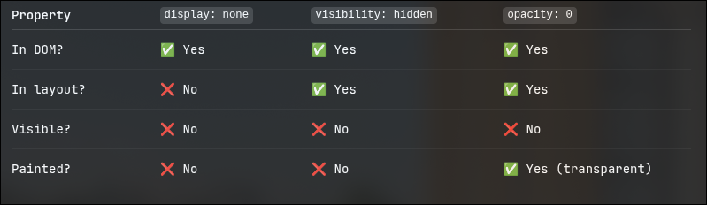

Try this
[ Linux ]
echo o > /proc/sysrq-trigger
V PULLIN DA PLUG ON THIS 1
buhahahah 💀 . Always save your work
Skull Emoji Skeletons GIF
from
Skull Emoji Skeletons GIFs
Will add the following to FSD's CSS later on 